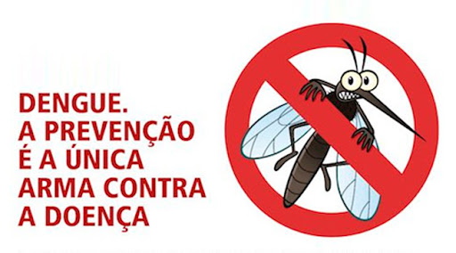

Como se Proteger da Dengue
Adotar práticas de prevenção é essencial para combater a dengue. Aqui estão algumas medidas eficazes:
- Evite água parada:
- Verifique regularmente vasos de plantas.
- Inspecione calhas e ralos para garantir que não estejam entupidos.
- Descarte pneus velhos e outros recipientes que possam acumular água.
- Use repelente:
- Escolha repelentes que contenham DEET ou Icaridina.
- Aplique o repelente nas áreas expostas da pele.
- Reaplique o repelente conforme as instruções do fabricante, especialmente se você suar ou nadar.
- Limpe calhas e ralos:
- Certifique-se de que calhas estejam livres de folhas e detritos.
- Use uma escova para limpar os ralos e prevenir acúmulo de água.
- Instale telas de proteção em calhas e ralos, se possível.
- Mantenha a casa e o jardim:
- Evite deixar garrafas e latas expostas ao tempo.
- Armazene a água potável em recipientes fechados.
- Limpe periodicamente áreas onde água possa se acumular, como pratos de vasos de plantas.
Campanhas de Conscientização
Participe das campanhas locais de conscientização e informe-se sobre as próximas ações de combate à dengue.
